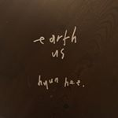

얼스어스 EarthUS
주소: 서울특별시 마포구 성미산로 150 (지번) 서울특별시 마포구 연남동 239-49
매일12:00 ~ 21:00
마포구 연남동 주민센터 근처에 위치한 '얼스어스'. 카페 이름답게 플라스틱 빨대부터 종이컵, 심지어 냅킨까지 모든 일회용품을 사용하지 않는 친환경 카페.
신선한 딸기가 토핑으로 올라가 있고 부드러운 크림치즈 또는 요거트에 상큼한 딸기의 조화가 먹음직스러운 '얼스퀘이크'가 인기 메뉴.
케이크 토핑은 제철 과일로 계절마다 바뀔 수 있으며 음료, 케이크 모두 개인 용기 지참 시에만 포장 가능.